In this assignment I extend support for microfacet materials.
This includes reflective, but not refractive materials.
It allows us to create metal like shiny surfaces or matte plastics.
I also implement depth of focus effect. This is done using a thin lens,
as compared to a pinhole camera.
Part 2: Microfacet Material
In this part we implement microfacet BRDF: this lets us render materials which reflect.
The method to do this is to implement the brdf evaluation function, and each of its coressponding terms.
The final step is to do importance sampling across the BRDF to be able to use less number of samples.
Here are some images rendered using different values of roughness. As the roughness increases from 0 to 0.5,
the dragon goes from most reflective to least reflective. When the dragon is most reflective, there is still noise,
that is because the light gets almost perfectly reflected to the walls. The render needs more time to stabilize.
|
Figure 1: alpha = 0.005
|
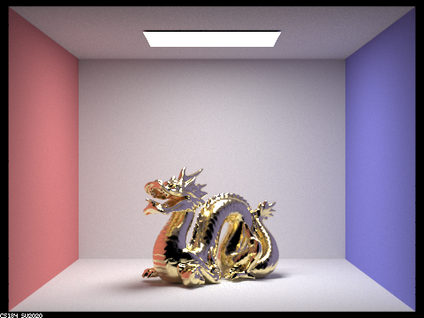
Figure 2: alpha = 0.05
|
|
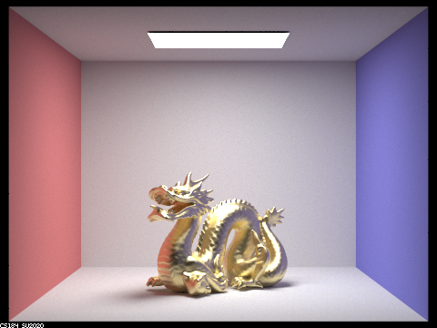
Figure 3: alpha = 0.25
|
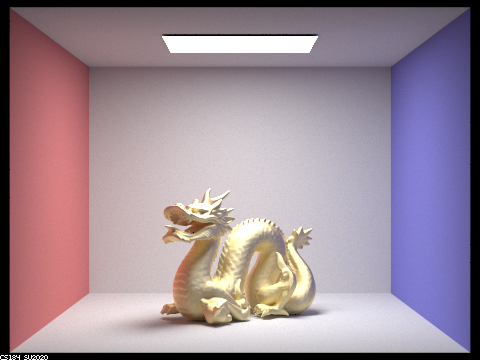
Figure 4: alpha = 0.5
|
Here are 2 images rendered using cosine hemisphere sampling and importance sampling.
We can see the increased noise in the hemisphere sampling method, because it does not sample
the important part of the BRDF, thus not making good contributions to the integral.
|
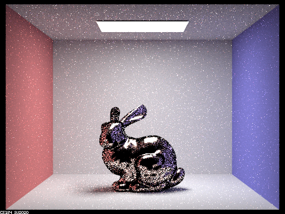
Figure 5: Using cosine-hemisphere sampling
|
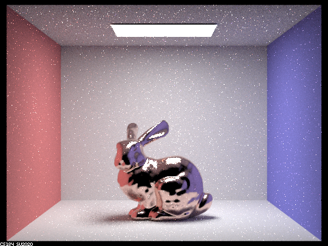
Figure 6: Using importance sampling
|
In this image, I replaced the material on the dragon with hematite. The values for this material were looked up.
We can see that the dragon does indeed look like an unpolished silver-colored iron ore.
|
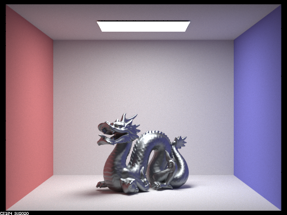
Figure 7: Using hematite
|
Part 4: Depth of Field
In this part, we use a thin lens model to simulate a depth of field effect.
With this model, only object in the focal plane are in focus and the others are not.
The idead of implementation is to simply integrate the rays across the area of the lens.
The reason that this works is that at the focal distance, every point on the plane converges
to the same point on the sensor. But this is not the case for other distances. Thus there is
a blurring effect. In a pinhole camera, there is no integration across the surface, because the
"surface" is just a point. Thus light cannot combine from various points to cause blurring, and the
image is sharp.
Here is one image showing the depth of field effect, rendered at 1920x1080 resolution and 2048 samples per pixel
and 16 samples per light.
|
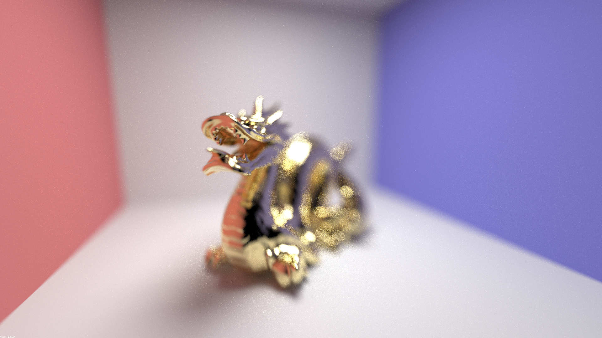
Figure 8: Full resolution dragon
|
Here we can see a focus stack. The aperture of the camera was set to 0.8.
The autofocus tool is used to focus on different parts of the object. Because the main
goal of this was to show the focus effect, and to also use the GUI with the autofocus tool,
the image is rendered at a low quality. The focus effect can be seen by looking at the dragon,
as well as on the floor left or right edge.
|
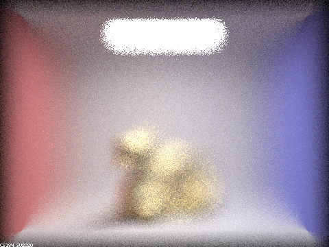
Figure 9: Focus Before the Dragon
|
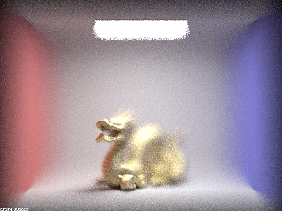
Figure 10: Focus on the Nose
|
|
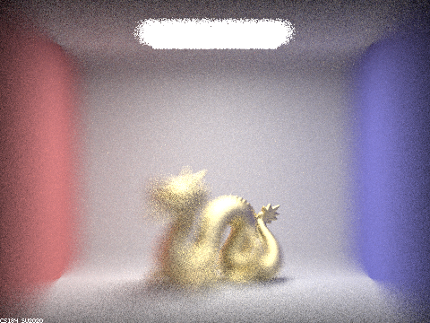
Figure 11: Focus on the Tail
|
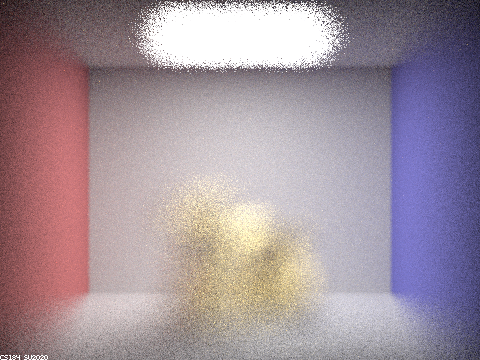
Figure 12: Focus on the Back Wall
|
Here there are 4 images with different aperture sizes, but focussed on the same point on the nose of the dragon.
As the aperture increase, points that are further away from the focal plane- in both directions- become blurred.
This is very apparent when we notice the line of intersection of the floor and either of the colored walls.
It is very clear for a small aperture, but as the aperture increases, only a small segment of that line is in focus.
The center of this segment lies on the plane of focus.
|
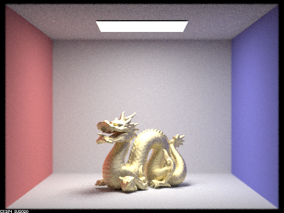
Figure 13: Aperture = 0.05
|
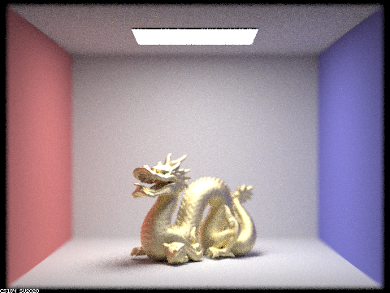
Figure 14: Aperture = 0.1
|
|
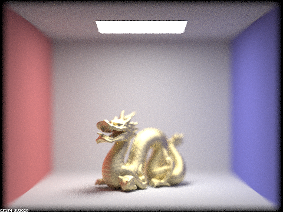
Figure 15: Aperture = 0.2
|
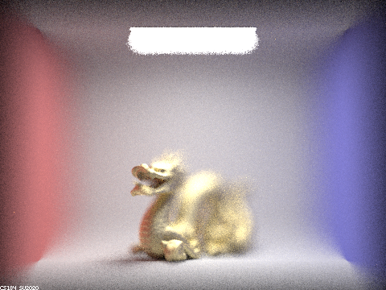
Figure 16: Aperture = 0.8
|